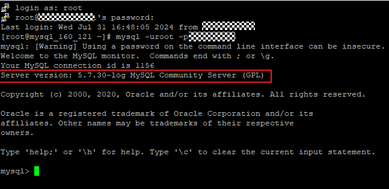
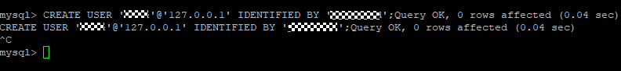

MySQL/MariaDB/GreatSQL在执行备份任务前，需开启对应版本权限，否则会导致注册、备份或恢复失败。不同版本的命令可能会有差异，可联系运维人员或数据库管理员提供对应的命令。
操作步骤
以下操作以MySQL数据库为例。
- 使用root用户，登录MySQL/MariaDB/GreatSQL主机，执行如下命令登录MySQL/MariaDB/GreatSQL数据库。
mysql -uroot -pPassword
命令回显示例如下：

- 记录Server version参数取值，该取值为数据库版本，将会用于后续操作。
- 执行以下命令创建用户。
CREATE USER 'name'@'127.0.0.1' IDENTIFIED BY 'password';
命令回显示例如下：


如果资源接入失败请尝试执行以下命令修改身份认证插件。
alter user 'name'@'127.0.0.1' identified with mysql_native_password by 'password';
- 执行以下命令为用户开启相应数据库版本权限，数据库的版本可以通过2获取。
- MySQL 5.x：
GRANT RELOAD, PROCESS, REPLICATION CLIENT, SUPER, LOCK TABLES ON *.* TO 'name'@'127.0.0.1'; FLUSH PRIVILEGES;
- MySQL 8.x/GreatSQL 8.x：
GRANT BACKUP_ADMIN, SELECT, RELOAD, PROCESS, SUPER, LOCK TABLES ON *.* TO 'name'@'127.0.0.1'; FLUSH PRIVILEGES;
- MariaDB 10.5/10.6/10.7：
GRANT RELOAD, PROCESS, BINLOG MONITOR, SUPER, LOCK TABLES ON *.* TO 'name'@'127.0.0.1'; FLUSH PRIVILEGES;
- MariaDB 10.3/10.4：
GRANT RELOAD, PROCESS, REPLICATION CLIENT, SUPER, LOCK TABLES ON *.* TO 'name'@'127.0.0.1'; FLUSH PRIVILEGES;
- MariaDB 5.6/10.2：
GRANT USAGE ON *.* TO 'name2'@'127.0.0.1' IDENTIFIED BY 'password'; GRANT RELOAD,PROCESS,SUPER,REPLICATION CLIENT,LOCK TABLES ON *.* TO 'name'@'127.0.0.1'; FLUSH PRIVILEGES;
- MySQL 5.x：